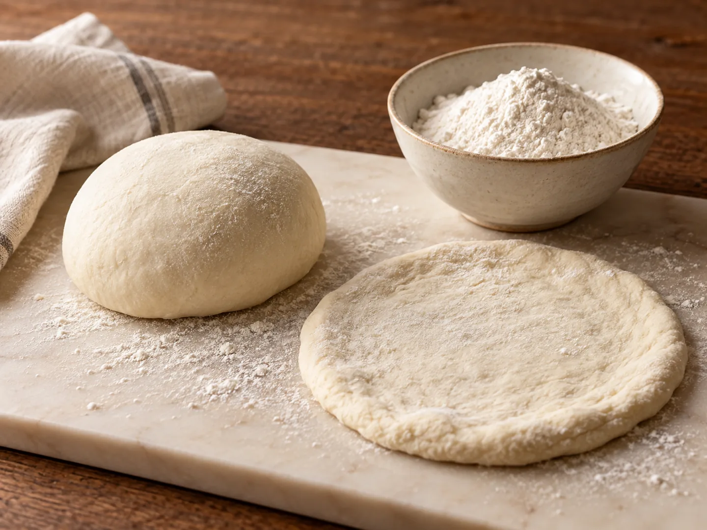
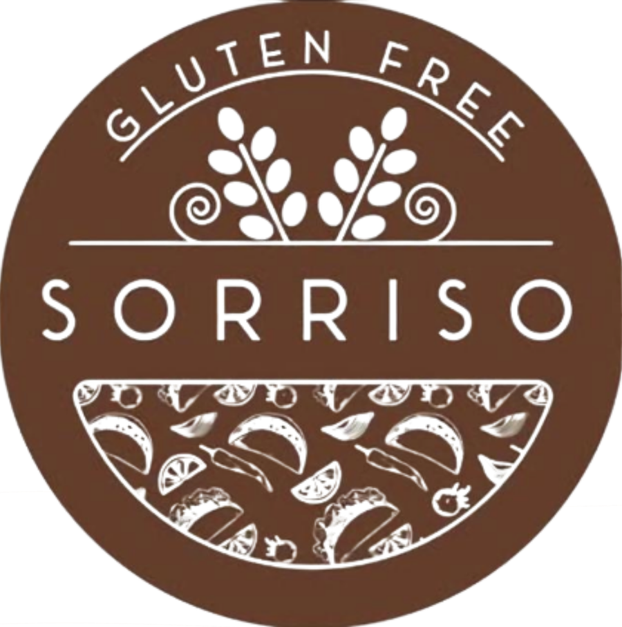
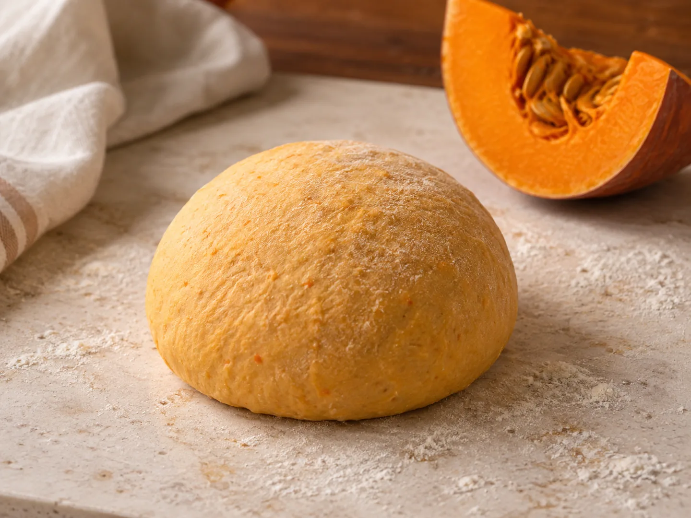

IMPASTO SENZA GLUTINE
L’originale di Sorriso
L’inconfondibile senza glutine di Sorriso, premiato e irreplicabile.
Senza frumento deglutinato, senza lattosio e senza proteine del latte.
Consulta le pizze ↗
Sorriso BistrotPIZZERIA · GLUTEN FREE · ROMASORRISO BISTROT · ROMA, SAN BASILIO
Il menù comprende pizze, antipasti, fritti, calzoni, bruschette, primi e dolci senza glutine e senza lattosio!
I nostri impasti senza glutine
Le indicazioni riguardano gli impasti, non i condimenti o gli altri prodotti.
BENVENUTI DA SORRISO
Sorriso Bistrot è una pizzeria in Via Sarnano 4, nel quartiere San Basilio a Roma. Proponiamo pizza classica napoletana, forno a legna e pizze con impasto senza glutine, da mangiare al tavolo o da ordinare per l’asporto e la consegna a domicilio.
Gli impasti senza glutine vengono preparati nel nostro laboratorio separato. Il menù comprende anche fritti e dolci senza glutine: consulta le proposte e segnala eventuali allergie quando prenoti o ordini.
Consulta il menùGLI IMPASTI SENZA GLUTINE
Senza glutine, senza frumento deglutinato, senza lattosio e senza proteine del latte. Le indicazioni si riferiscono agli impasti; verifica gli allergeni dei condimenti nel menù.

IMPASTO SENZA GLUTINE
L’inconfondibile senza glutine di Sorriso, premiato e irreplicabile.
Senza frumento deglutinato, senza lattosio e senza proteine del latte.
Consulta le pizze ↗
IMPASTO SENZA GLUTINE
Preparato con semi di zucca tostati, per un gusto tostato e aromatico. I semi apportano proteine vegetali, grassi insaturi, magnesio e zinco.
Senza frumento deglutinato, senza lattosio e senza proteine del latte.
Consulta le pizze ↗IMPASTO SENZA GLUTINE
Preparato con semi di canapa biologici di produzione italiana. Un impasto di nostra produzione, da abbinare alla pizza che preferisci.
Senza frumento deglutinato, senza lattosio e senza proteine del latte.
Consulta le pizze ↗Le proprietà dei semi non equivalgono ai valori nutrizionali della pizza finita. Indica l’impasto che preferisci quando ordini.
Le vostre recensioni
Estratti di recensioni Google riportati da Restaurant Guru.
Veramente la migliore pizzeria di Roma e dintorniLeggi su Restaurant Guru ↗
Personale e proprietario gentilissimi.Leggi su Restaurant Guru ↗
Best gluten free pizza I have had.Leggi su Restaurant Guru ↗
Estratti consultati il 18 settembre 2026.
IL LABORATORIO E IL MENÙ
Dalla preparazione degli impasti alla scelta sul menù: ecco cosa trovi da Sorriso.
Queste indicazioni riguardano gli impasti senza glutine. Condimenti e altri prodotti possono contenere allergeni: consulta il menù e segnala le tue esigenze allo staff. Proponiamo anche pizze con glutine.
PRENOTAZIONI E ASPORTO
Compila il modulo e invia il messaggio su WhatsApp. Ti risponderemo per confermare la disponibilità.
La richiesta è confermata solo dopo la risposta dello staff.
Preferisci chiamare? 345 583 4226 ↗DOVE SIAMO
PRIMA DI VENIRE A TROVARCI
Sorriso Bistrot si trova in Via Sarnano 4, nel quartiere San Basilio a Roma. Puoi mangiare al tavolo oppure richiedere un ordine da asporto.
No, proponiamo anche pizze con impasto classico contenente glutine. Gli impasti senza glutine vengono preparati in un laboratorio separato. Segnala celiachia e altre allergie quando prenoti o ordini.
Usa il modulo per preparare la richiesta su WhatsApp o chiama il 345 583 4226. Per l’asporto indica prodotti, quantità e impasti. Attendi sempre la conferma dello staff.
Sì, il menù include antipasti e dolci gluten free. Consulta la pagina menù per prodotti, prezzi e allergeni e verifica le disponibilità con lo staff.
No. I nostri impasti senza glutine sono anche senza frumento deglutinato, senza lattosio e senza proteine del latte. Queste indicazioni riguardano gli impasti senza glutine. Condimenti e altri prodotti possono contenere allergeni: consulta il menù e segnala le tue esigenze allo staff.
Sì. L’impasto è di nostra produzione e viene preparato nel nostro laboratorio gluten free separato.
TIKTOK · INSTAGRAM · FACEBOOK
Seguici sui social
Guarda i nostri video per scoprire le promozioni, le offerte e le novità di Sorriso.
TikTok
Seguici su TikTok ↗aprilo dal link qui sotto.
Riconosci il supplì senza glutine?
Guarda su TikTok ↗aprilo dal link qui sotto.
Ferragosto da Sorriso · Archivio
Guarda su TikTok ↗aprilo dal link qui sotto.
Pizza classica e senza glutine
Guarda su TikTok ↗Instagram
Seguici su Instagram ↗Facebook
Seguici su Facebook ↗